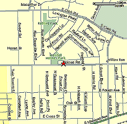

|
Directions to Holmes! |
|
|  | Holmes Elementary - 1225 Holmes Rd., Ypsilanti Take State St. to N. University and turn right. Follow N. University until it turns into Geddes. Turn right when Geddes dead ends onto Huron, and then turn right after the bridge so you are back on Geddes. Take Geddes into Ypsilanti all the way to Prospect St., turn right onto Prospect. Take Prospect to Holmes Rd., turn left onto Holmes Rd. Follow Homes Rd. past Holmes Park. Holmes is on the left. for more info, contact Leon Salkin |